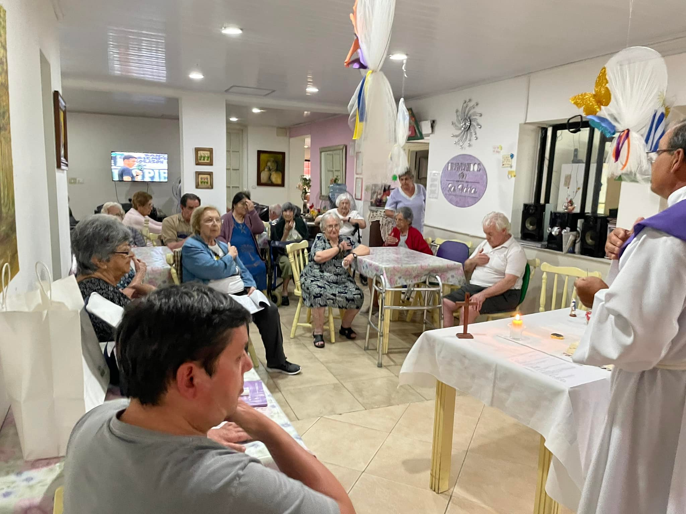
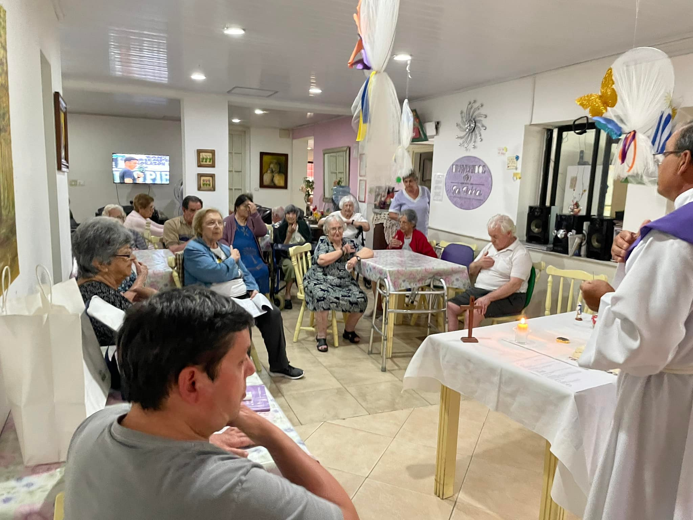

Todas nuestras actividades están pensadas para jugar un papel específico en el proceso de adaptación y en la vivencia cotidiana de nuestros residentes.
Taller de estimulación cognitiva
Taller de huerta
Festejos de cumpleaños y fechas conmemorativas
Actividades ludicas
Gimnasia funcional
Servicios Médicos
Servicio de enfermeria a demanda 24 horas
Valoración Geriátrica Integral
Dirección Técnica Dr. Geriátrica Javier Bessonart
Servicios Generales
Menú incluyendo todos los tipo de macronutrientes necesarios, con supervisión de profesional
Coorindación de comidas familiares
Conexión WIFI en todas las salas
Coorindacion de peluqueria/podologia a demanda contratado por residente
Directv en todos los espacios comunes y en cada habitación privada de los residentes
Entretenimientos, cine y diferentes actividades semanales
Servicio de lavanderia
Grandes espacios al aire libre e interiores
Salas acondicionadas termicamente para cada estación del año


 
